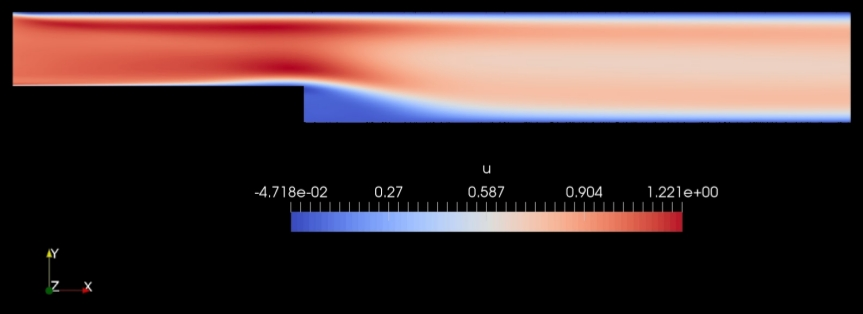

Partial differential equations govern complex physical phenomena present in industrial processes and complex systems that drive disruption and innovation in the world economy. Obtaining solutions of partial differential equations usually involves complex numerical integration that provides information in numerical form, which lacks any generalization properties. Over the last decade AI algorithms have experienced an unprecedented development and adoption as a result of improved hardware solutions (GPUs) and algorithms. One such algorithm is PINNs which can be trained on parameterized geometries and express the information encoded in the differential equation to parameterize and optimize. From March to August 2020 I interned at NVIDIA in Santa Clara CA helping develop Simnet, a toolbox that allows for such parametrizations leveraging ML and GPU computing.
